play
a variety of illustrations, experiments, and sketches.
more experimental digital sketches can be found here
a folding narrative about the race and gender in america. there's no defined beginning or end, reflecting the endless nature of these issues. statements were inspired by jenny holzer's "truisms".
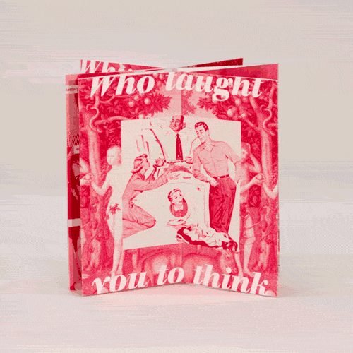
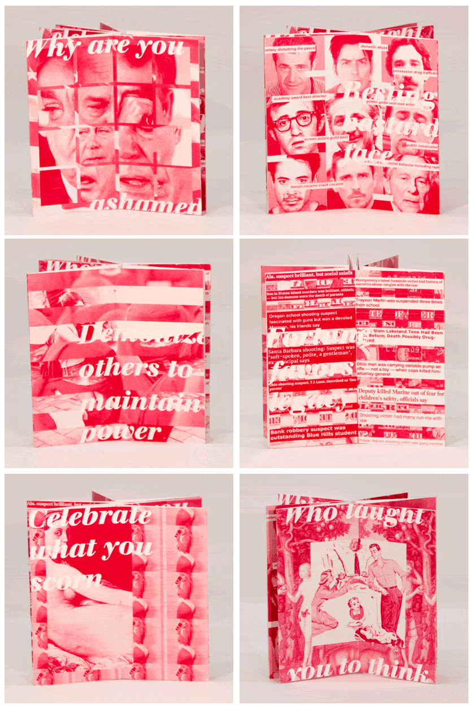
playing with a scanner with jillian.
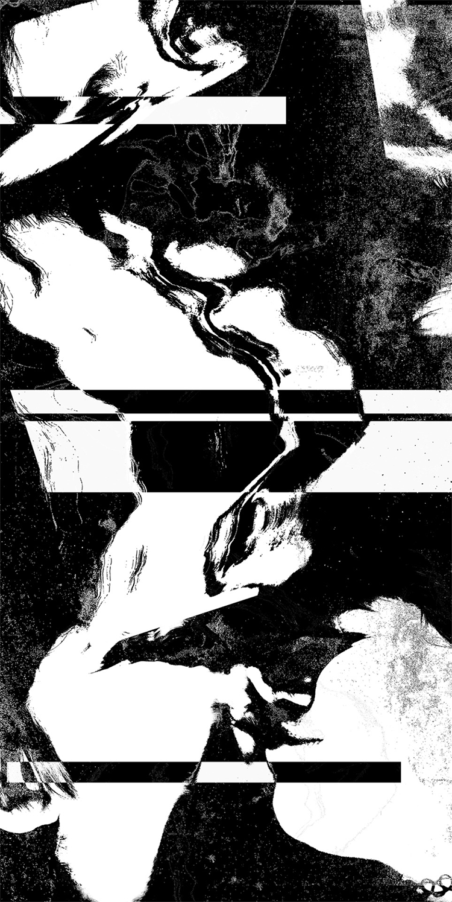 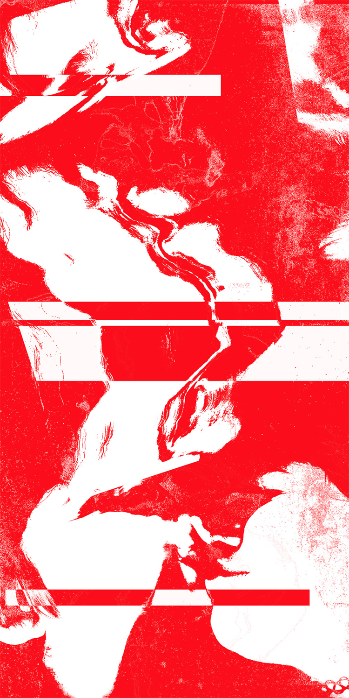
an exercise with john in found materials (post it notes) and type. see complete process here
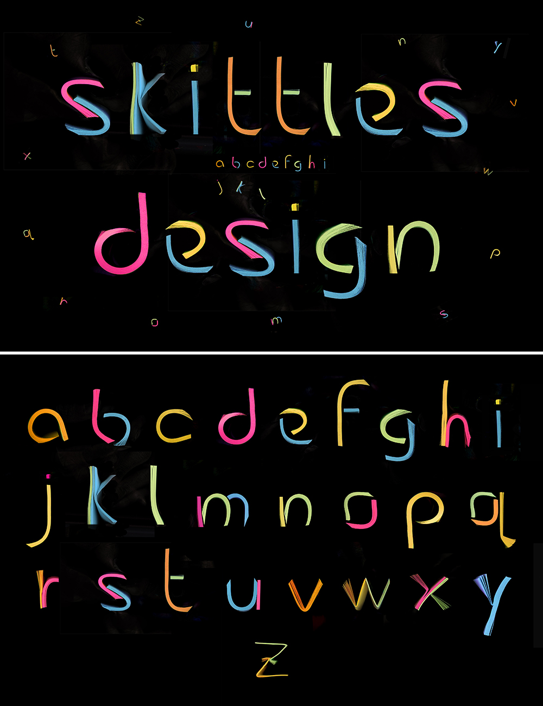
images based on chet faker's blush
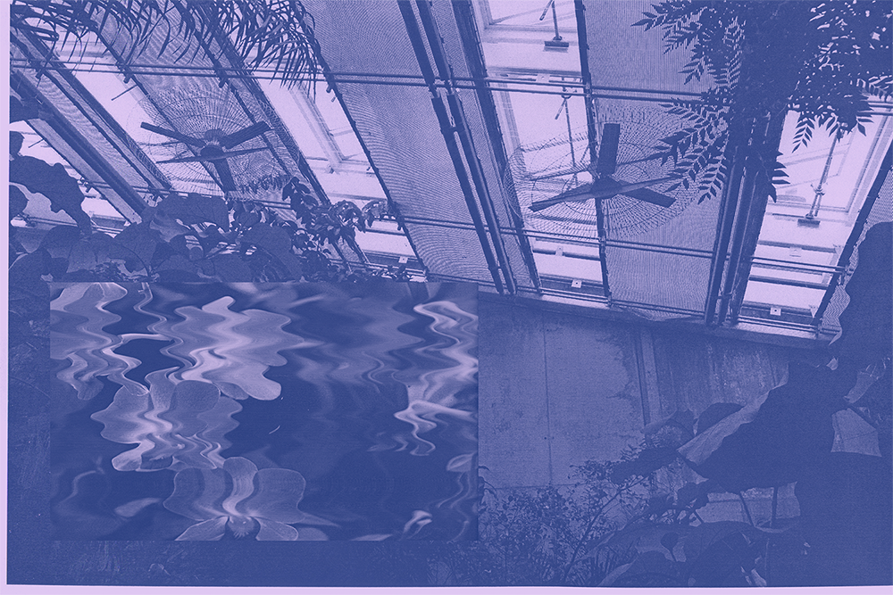

artichoke print grocery bag
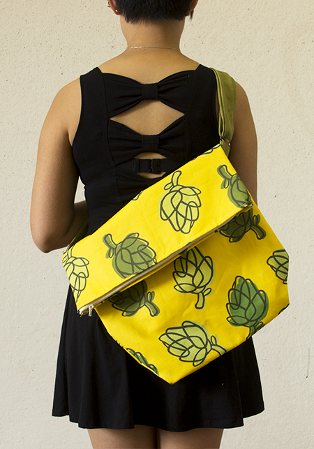 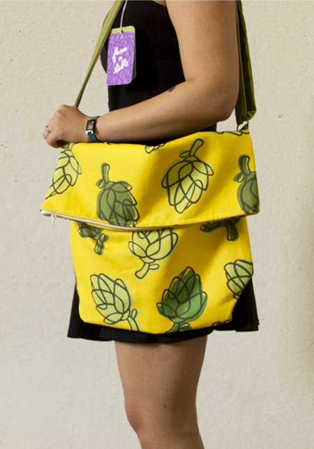
iterations and final pattern tile
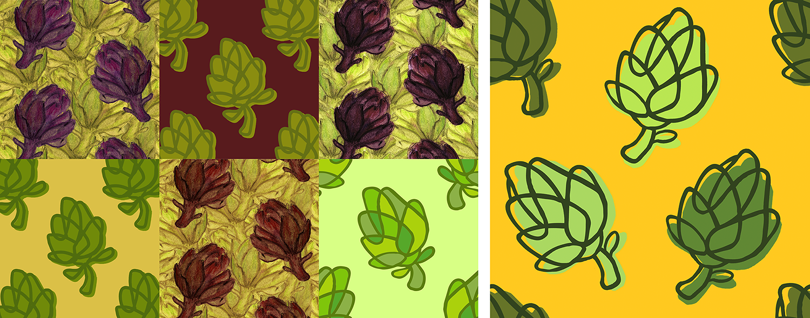
diptych of the little mermaid
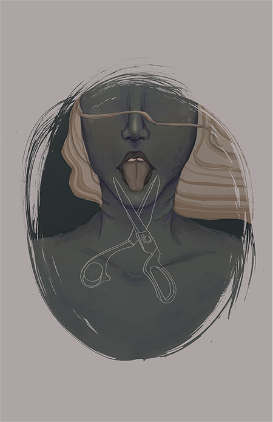 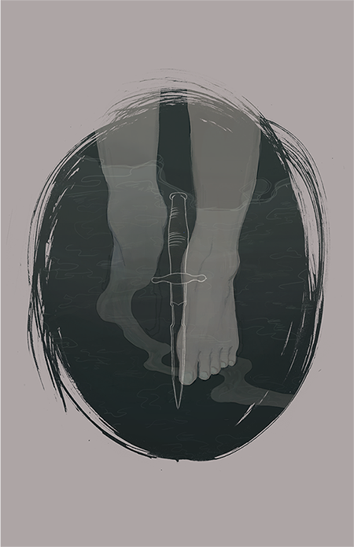
experimenting with pantyhose
<< back